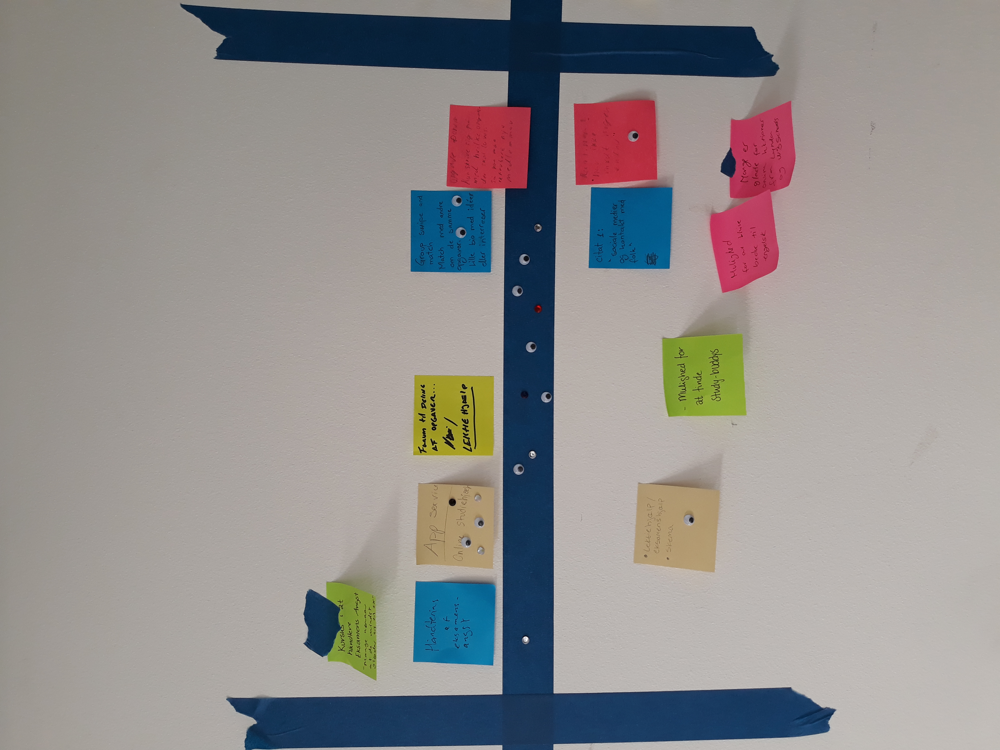
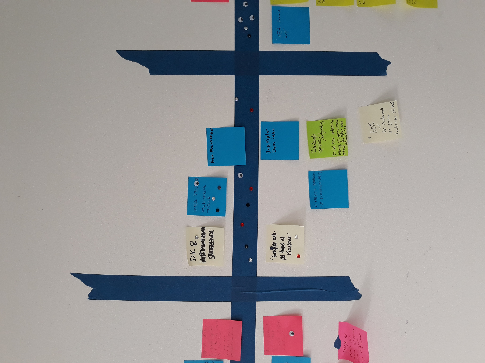
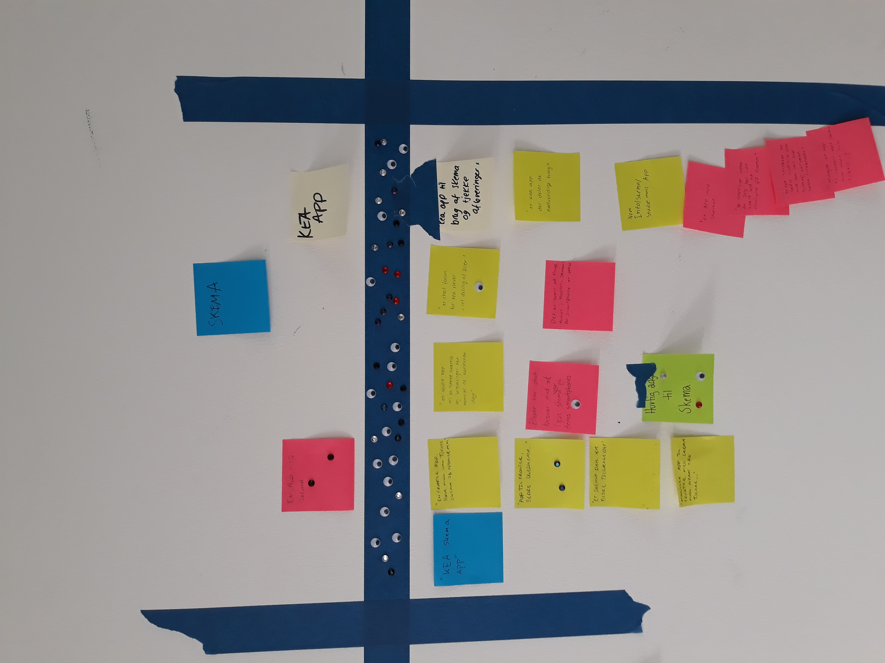
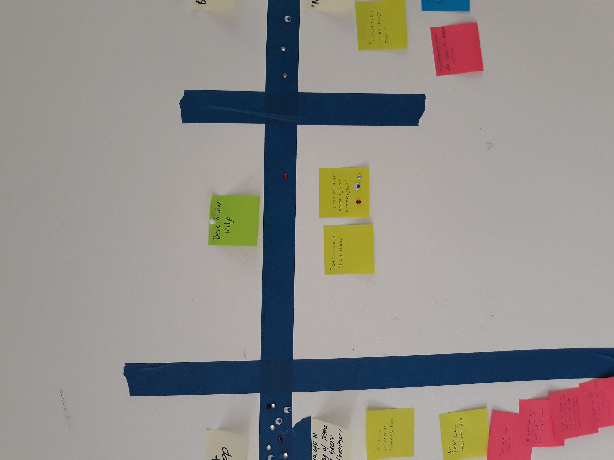
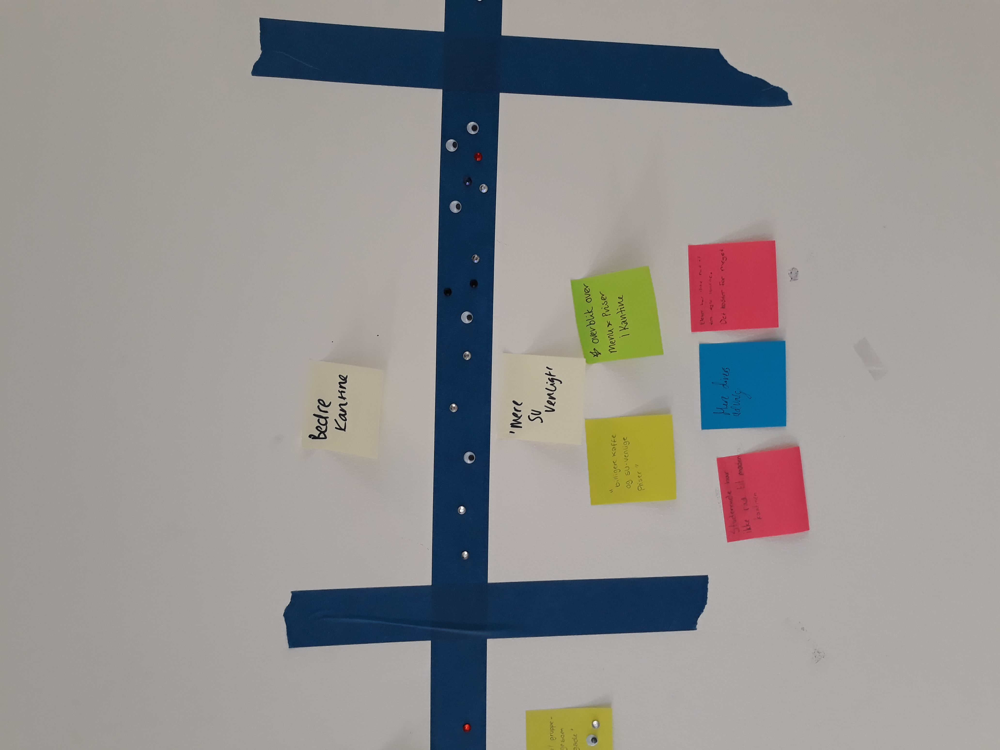
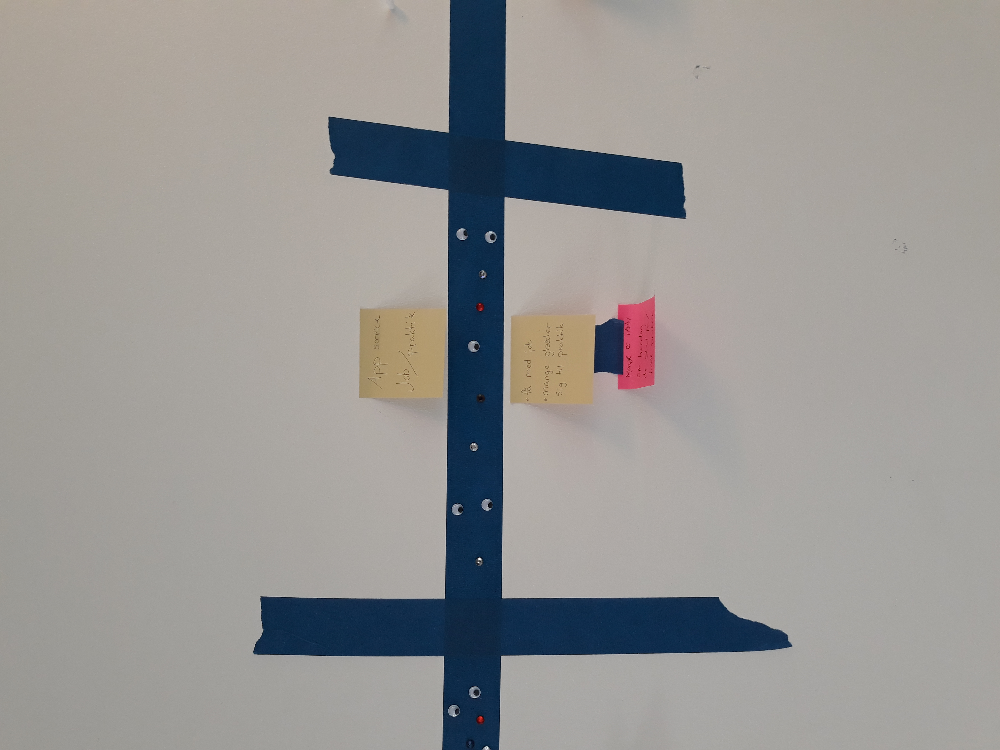

Bruger research
Hvorfor i har indsamlet data (formålet)
formålet er at forbedre forholdene på keaHvordan i rekrutterede deltagerne/respondenterne
alle i klasse a og b blev bedt om at udfylde et spørgeskema i klassenHvordan dataindsamlingen blev udført
opgaven er udført individuelt på folks egen computer.Se alle besvarelser igennem (et spørgsmål af gangen) - noter de interessante besvarelser (enten svar der understøtter pointer eller er ny/god viden)
- der går unge mennesker på kea- der er en overvægt at kvinder 60/40
- folk bor overvejende i københavn
- folk bor til leje
- de er overvejende i forhold 60/40
- der er få der har børn
- de fleste har en studenter baggrund
- folk er overvejende af dansk afstamning og foretrækker at tale dansk
- folk rådighedsbeløb strækker sig fra 1500-10000
- de bruger overvejende mac over pc 75/25
- samme med apple vs android
- folk bruger grundlæggende deres smartphone til sociale medier kommunikation og andre ting der er hurtigt at tjekke
- de bruger deres smartphones alle steder
- folk foretrækker at bruge deres desktop til ting man kan gå mere i dybden med (film, photoshop, arbejde, spil, skolearbejde)
- de tjekker sjældent deres studiemail
- de bruger overvejende ikke sundheds appen 65/35
- det folk mangler på kea er; bedre indeklima, bedre lokaler/steder til gruppearbejde, bedre/billigere kantine, bedre struktur, bedre skema, bedre internet, et bedre fronter.
- folk mener at det gode ved kea er: det sociale miljø, lærerne, fredagsbar, kreativ frihed.
- det folk glæder sig mest til på kea er; læring, at blive færdiguddannet, at lave en masse kreative ting.
- det folk glæder sig mindst til på kea er; eksamen,
- folk bruger lynda til: se toturials.
- folk bruger fronter til: skema og opgaver,
- folk bruger ikke kea.dk
- andre platforme folk bruger i deres studie; youtube, google google/docs, facebook,
- de digitale platforme folk mangler i deres studie er; ved ikke/ikke nogen, kea apps/skema apps.
- omkring halvdelen har ingen erfaring med at arbejde/studere i udlandet.
- omkring halvdelen har overvejelse om at studere/arbejde i udlandet i fremtiden
- folk møder de internationale elever i fredagsbaren
- folk er sådan lidt blandet omkring hvorvidt de har lyst til at arbejde sammen med internationale elever
- fordele ved at arbejde sammen med internationale elever; øget netværk, bedre engelsk kundskaber,
- hvordan vi arbejder på tværs af linjer: gruppearbejde,
De steder, i har identificeret noget interessant
- folk mangler bedre forhold til gruppearbejde- de mangler bedre skema/stuktur/intranet.
- glade for fredagsbar
- mange har drømme og at studerer i udlandet
- ingen kontakt med de internationale elever
Udpluk/kopier citaterne, og skriv dem ned (på post-it)

Visualiser og grupper data - f.eks. Med post-its
     Noter de forskellige temaer, i har identificeret som værende interessante
-Studiehjælp-Internationale elever
-Kea skema app
-Studiemiljø
-Kantine
-Praktik